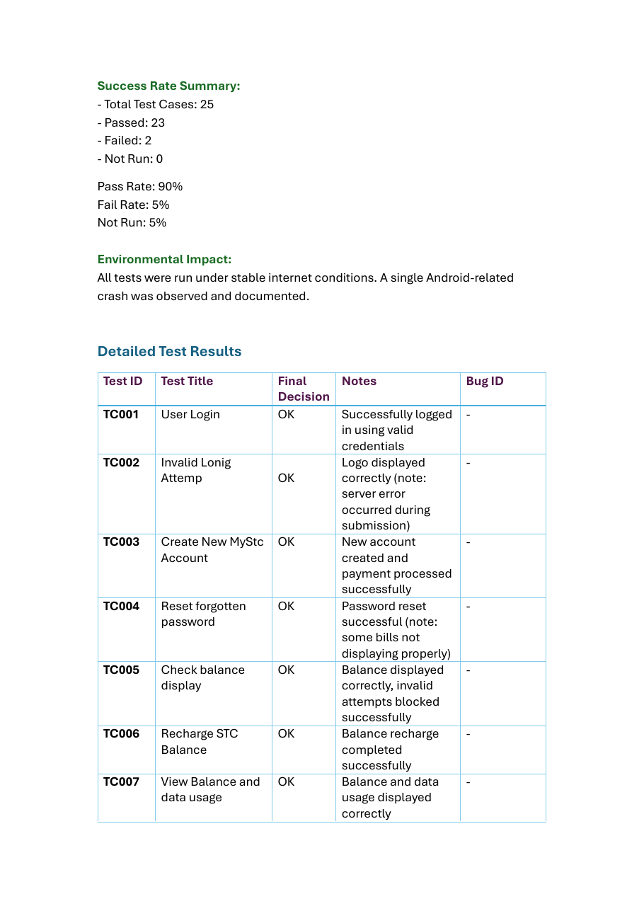

MISSION_05 ////
MYSTC QA TESTING
– MOBILE APPLICATION SYSTEM DIAGNOSTICS
A team-based Software Testing and Quality Assurance case study evaluating the MySTC mobile application through structured manual testing. The project covered 25 functional test cases on iOS and Android devices, documented defects, summarized release quality, and proposed corrective recommendations.
◉ PROJECT SCOPE
- Designed and executed structured functional test cases.
- Tested on iPhone 13 and Samsung Galaxy S21.
- Covered iOS 17.1, Android 13, Wi-Fi, and 5G environments.
- Documented results, defects, dates, and recommendations.
▣ QA AREAS
⌁ FEATURES TESTED
- Login, account creation, and password recovery.
- Balance, recharge, data usage, and roaming.
- eSIM, support, language, notifications, and theme.
- Bills, transactions, profile updates, and auto-recharge.
◌ TESTING ENVIRONMENT
Devices: iPhone 13 and Samsung Galaxy S21
OS: iOS 17.1 and Android 13
Networks: Wi-Fi and 5G
Method: Manual testing
◇ TESTING PROCESS
TC001 USER LOGINPASS
TC003 CREATE ACCOUNTPASS
TC006 RECHARGE BALANCEPASS
TC010 ACTIVATE ROAMINGPASS
TC014 NOTIFICATIONSFAIL // BUG001
TC016 THEME SWITCHINGFAIL // BUG002
TC019 DOWNLOAD BILL PDFPASS
TC025 SUPPORT TICKETPASS
Notifications were not received on any tested device. This defect was documented under TC014.
Changing between light and dark mode required an application restart. This defect was documented under TC016.
◇ RECOMMENDATIONS
- Resolve the complaint-submission server-side issue.
- Correct inconsistencies in older billing-history displays.
- Improve performance over 4G mobile networks.
- Fix defects and re-test before User Acceptance Testing.
◇ WHAT I LEARNED
QA_MYSTC_25

STATUS: TESTING COMPLETE // DEFECTS DOCUMENTED